Four distinct cinematic art directions developed to represent the full professional identity of Abhay Dwivedi without AI/ML templates or generic developer widgets.
Inspiration: Auteur film title sequences, criterion monograph covers, fine editorial publication typography.
Visual Tone: Warm archival bone, deep sumi-e carbon ink typography, vermilion seal stamp, and precision corner registration marks.
Idea: Presents your name as the central hero in an expansive, elegant serif title reveal, communicating authority, taste, and executive governance experience.
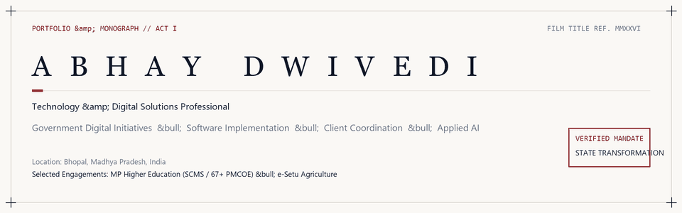
Keyframe Sequence (Opening → Middle → Ending):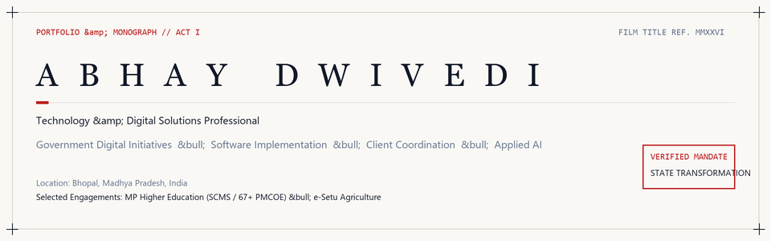
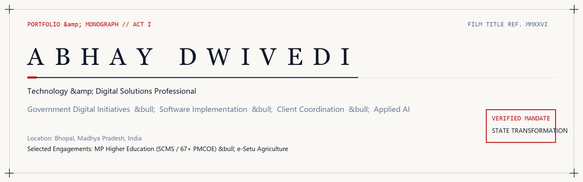
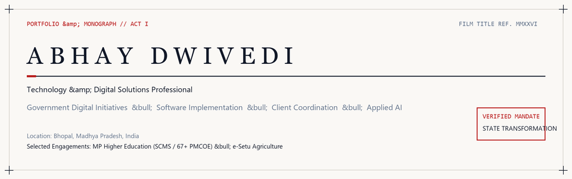
Inspiration: The complete narrative journey from public-sector policy mandates (e-Setu, SCMS across 67+ PMCOE colleges) to technical implementation, UAT, and real-world human adoption.
Visual Tone: Architectural blueprint grid, deep Prussian navy, burnt terracotta saffron, and human-impact emerald.
Idea: Rather than a static title, an animated energy signal traverses four sequential milestones representing your multidisciplinary spectrum: State Initiatives → Institutional Rollout → Human Enablement → Applied AI Solutions.
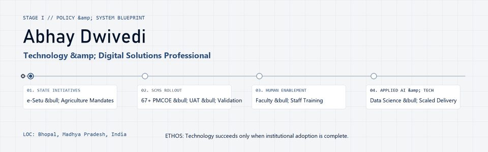
Keyframe Sequence (Opening → Middle → Ending):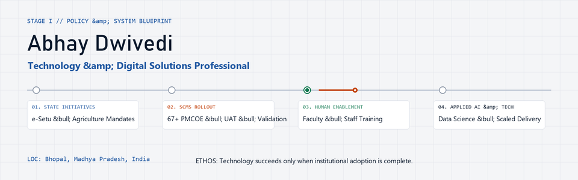
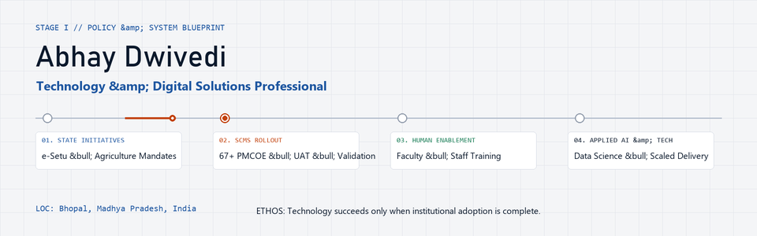
Inspiration: Swiss kinetic typography, brutalist clarity, and high-impact design agency identities.
Visual Tone: Stark contrast white-on-black with precision measurement ticks, cobalt blue flash, and amber accent flare.
Idea: Positions "ABHAY DWIVEDI" with bold architectural scale, using animated measurement scales and asymmetrical structural blocks for government systems and AI execution.
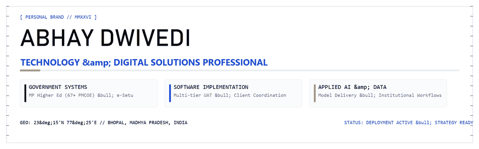
Keyframe Sequence (Opening → Middle → Ending):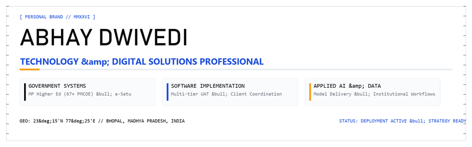
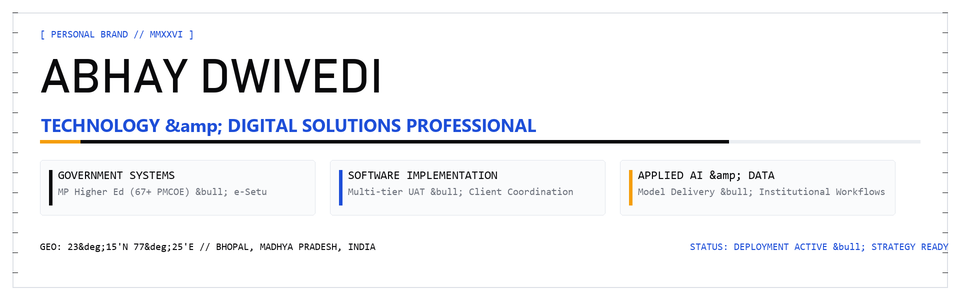
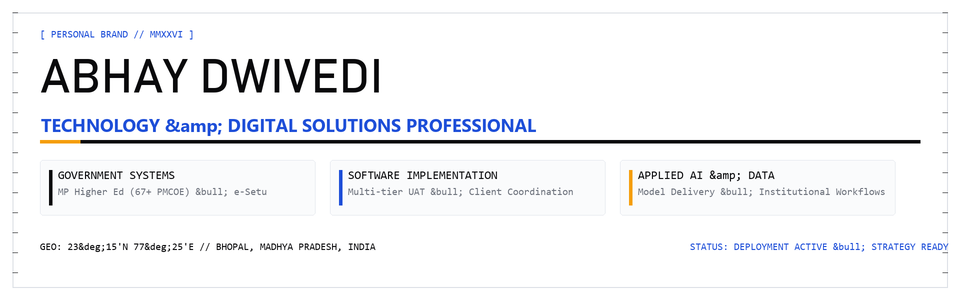
Inspiration: Apple keynote cinematic title cards, modern tech studio horizon aesthetics, widescreen 2.39:1 framing.
Visual Tone: Titanium alabaster gradient, deep iris indigo, warm sunrise topaz horizon flare.
Idea: An anamorphic golden light flare travels across an expansive horizon dividing the brand identity above from the three institutional pillars below.
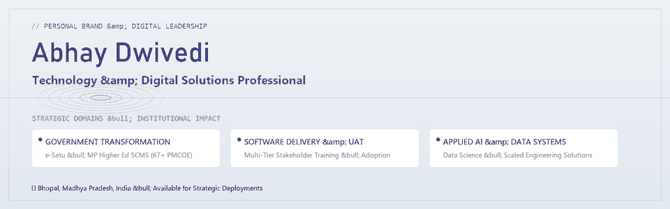
Keyframe Sequence (Opening → Middle → Ending):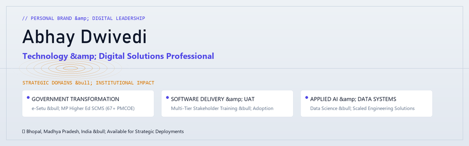
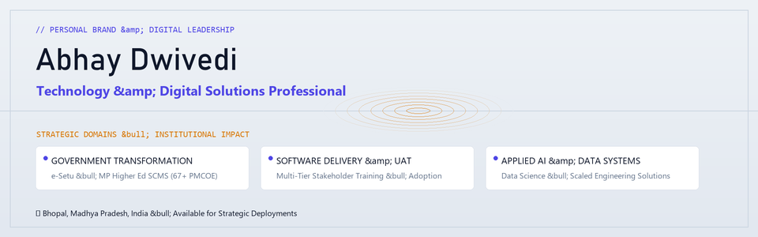
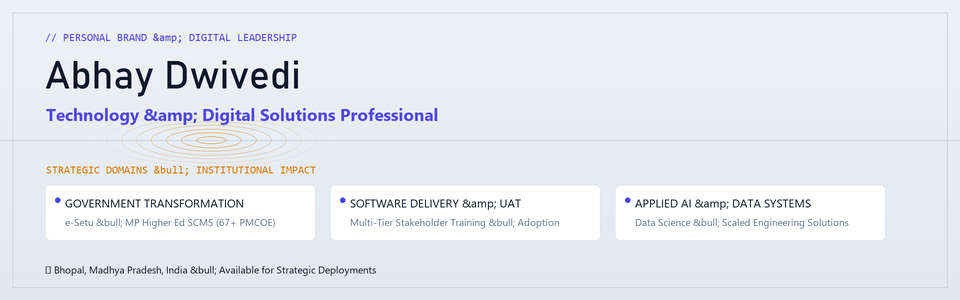